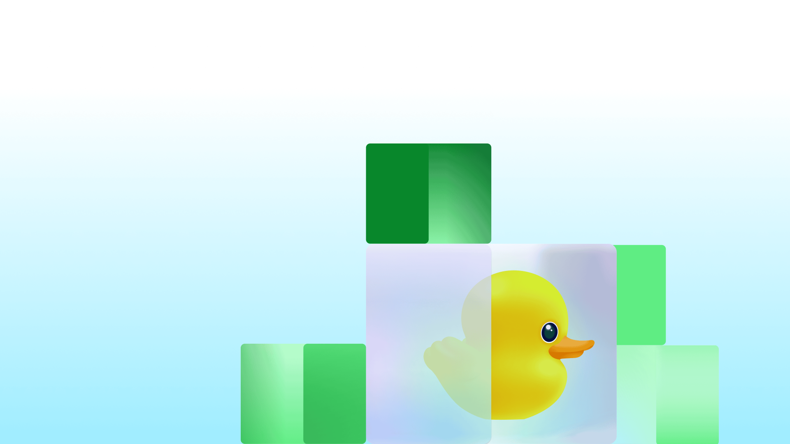
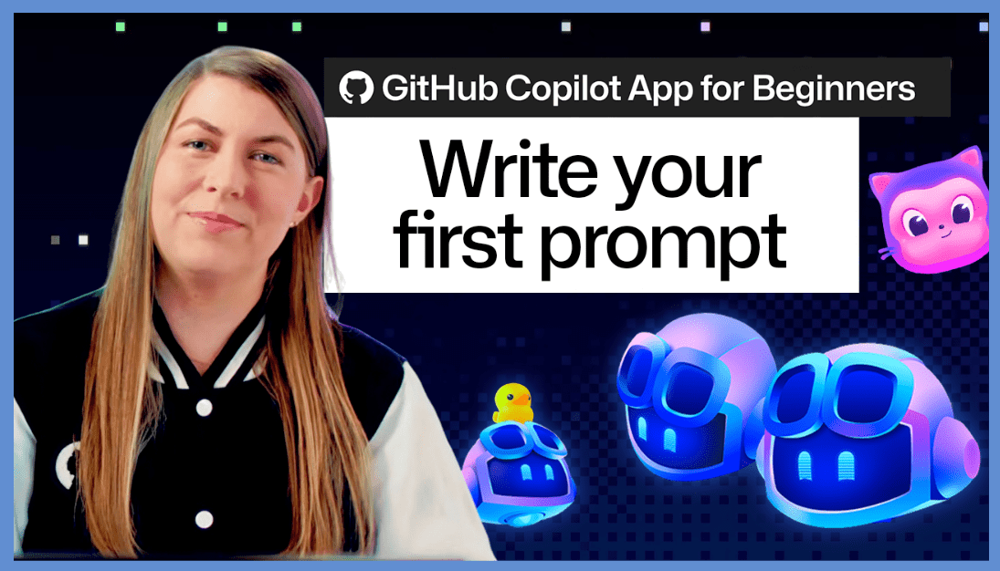
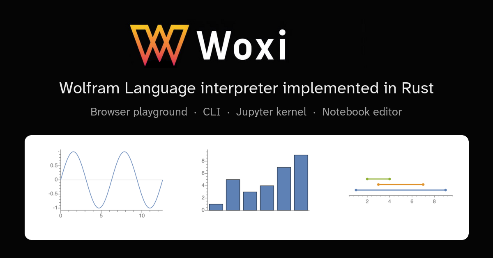
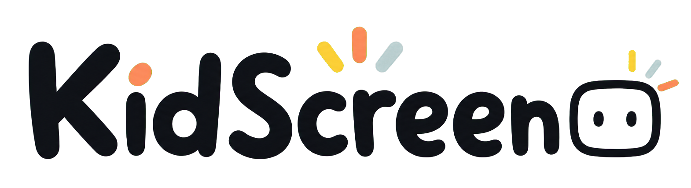
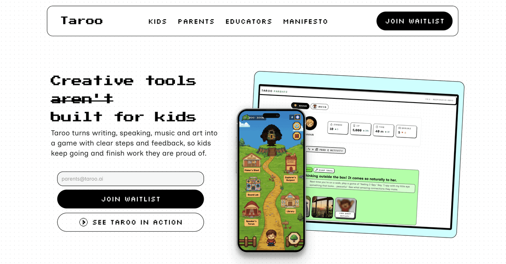

🔥 Top 3 (must read)
What's New in Flutter 3.47
(HN discussion) — Flutter shipped version 3.47 with its latest round of framework updates. The HN thread (61 points, 40 comments) has early reactions from other Flutter devs. You ship Flutter apps, so a new stable release is a direct to-do: read the changelog and plan the upgrade.
F
Your contributors are AI-first now. Is your project?
The AutoGPT maintainer explains how AI-written contributions are already showing up in their queue, and shares the repo instructions, gates, and boundaries that keep maintainers in control. This is a working playbook for the same problem you face as an EM: how to accept AI-written code without losing review quality.

Quoting Florian Herrengt on AI and the middle of software engineering
A short, sharp scene: a team has asked AI to fix the same bug four times, and the engineer who "built" the feature does not know where the data comes from. It matters to you as a manager: it shows the real cost when a team uses AI to write code nobody understands.
S
🤖 AI for developers
Write your first prompt with the GitHub Copilot app
GitHub's guide to the Copilot app: how to pick context and model, and start a first task. Useful as onboarding material for teammates new to agentic tools.

DeepSeek V4 Pro 0813
New DeepSeek Pro model, API-only for now (via OpenRouter). No word yet on open weights. Worth a note if you compare LLM APIs for cost.
S
👔 Engineering & teams
Covered in Top 3 today (AI-first contributors, the Florian Herrengt piece). Nothing else qualified.
🎯 For me
Flutter 3.47 is the direct hit today — check the release notes before your next app update.
The AI-first contributors post doubles as an EM template: its "gates and boundaries" idea maps well to internal code review rules for AI-written PRs.
💡 App ideas & indie builds
Woxi — open-source Mathematica / Wolfram Language reimplementation
(HN) — A free clone of an expensive, closed tool. The user problem: people want Wolfram's language without the license cost. Lesson: "open-source version of a paid tool" is a proven demand signal (261 points).

KidScreen — a finite YouTube shelf chosen by parents
(HN) — Parents pick a fixed set of videos; the endless feed is gone. The problem is not "kids watch videos", it is "the algorithm decides what's next". Constraint-as-feature is a strong indie pattern.

Taroo — creative iPad app for kids
An engineer-turned-PM built it so their 6-year-old niece's iPad pushes drawing, stories, and wondering instead of passive watching. Same space as KidScreen but the opposite bet: create more, not watch less.

Programmable timer web app
(HN) — Timers you script for gym or stretching sessions. Tiny scope, zero login, solves one real problem well — a good template for a weekend Flutter build.
T
Keep Laughing Forever Radio — an 80s/90s radio station
Not just a playlist: jingles, station IDs, and DJ links recreate the feeling of old radio. The lesson: the emotion around a product can be the product.
🎓 Try this
Skim the AI-first contributors playbook and copy one idea into your own repos this week: add a short
AGENTS.md / repo instructions file that tells AI tools (and the humans driving them) what a good PR looks like in your codebase.